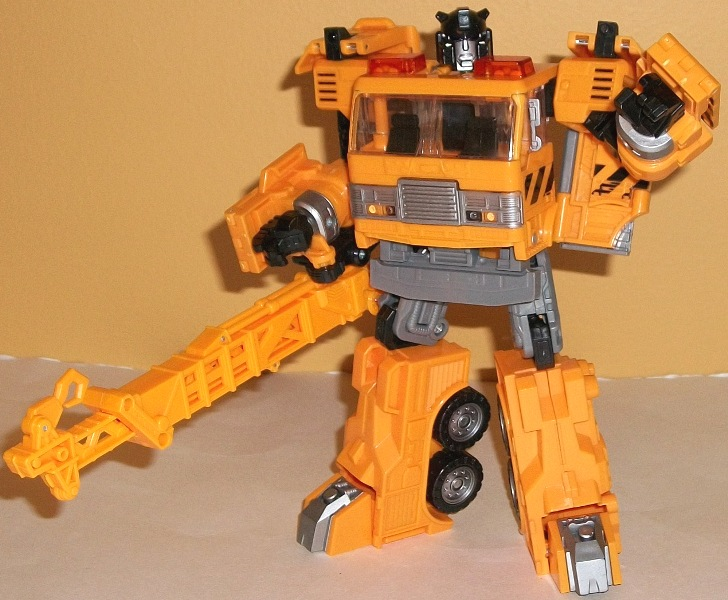
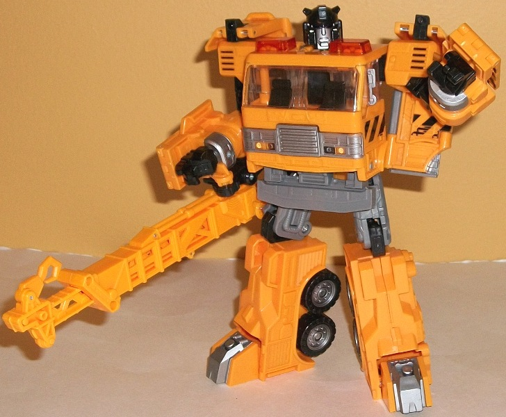

(NOTE: Because this is a repaint, this is not a full-blown review. This mainly covers any changes made to the mold and the color scheme, and merely compares it to the Universe 2.0 Inferno toy. For a review on the mold itself, read the review of the Universe 2.0 Inferno toy here .)
This version of "Solar
Storm Grappel" (I'm not sure why his name is consistently misspelled on
the box) sticks pretty strongly to the overall design of the
G1
toy
-- while keeping in mind, of course, the overall mold design of
the Inferno toy that it's based off of. His color scheme is fairly basic--
the standard colors of black and gray are there, along with some silver
on the front grill, wheel hubs, face, arms, and feet. (Thankfully, the
gray on Grapple ISN'T that blah light milky gray, but a more standard gray
that looks a little bit more convincingly like dull, worn metal.) The main
color is a yellowish orange-- certainly appropriate for the vehicle mode,
and it definitely doesn't clash with anything, but not one of my personal
favorite colors, overall. An "emergency stripes" set of paint apps help
to split up the yellow a bit, particularly in vehicle mode, and the transparent
red sirens look good against the yellow. Since Grapple is from the "Reveal
the Shield" subline, he also has an allegiance rub symbol on his left side
above one of the painted windows-- rub it to reveal that he's an Autobot.
Far from a simple repaint,
Grapple is a remold, and a substantial one at that. In addition to the
remold required to change his vehicle mode into a crane (namely, the replacing
of Inferno's water cannon with a crane arm that can extend up to nearly
twice its original length and has a movable hook on the end), several of
his robot parts are also changed for this release-- his head, lower arms,
hands, and feet. This helps to give him a bit more of a unique appearance
beyond just being a "yellow Inferno with a crane". The details on his arms
are more rounded and a bit more suited for this style of robot mode (which
is a bit rounded overall), and his hands are now molded into a somewhat
more dynamic "opening" pose, as opposed to the closed square fists of Universe
2.0 Inferno. However, the re-design there also removed the ability of the
panels on the sides of his arms to rotate back, which is a bit of a bummer
as it makes them more obviously kibble in robot mode. The toy's wrists
can no longer rotate, either. The toes have been remolded to be slightly
smaller and even more angular than Inferno's, but otherwise it's a mere
aesthetic change that, honestly, could've been passed over and I wouldn't
have complained any. The head design is particularly well-done, and with
the little square "horns" on the forehead helps give Grapple more of a
unique look over Inferno's head-- something he didn't have before, but
which also isn't so totally removed from his G1 head design that he looks
like a different character. The crane arm itself is pretty impressive--
certainly moreso than Inferno's relatively puny water cannon-- but I'm
of mixed feelings about it. In vehicle mode is looks great, has functionality,
and also covers up that unsightly gap down the middle of the top of the
vehicle pretty well. However, in robot mode it just hangs off Grapple's
right arm and weighs it down and is a slight nuisance. I wish it could
at least detach and be held in his hands or something...
Solar Storm "Grappel"
is a pretty nice remold of Universe 2.0 Inferno that accomplishes what
it sets out to accomplish-- updating the character in a fitting way for
an era with more modern articulation and proportional standards, and making
him substantially different-looking from Inferno to boot. However, due
to the fact that I'm not a fan of his primary yellowish-orange coloration
(as accurate to G1 as it is), and that the panels on the backs of his arms
can't rotate around like they used to, if you're only wanting to pick up
one version of this mold I'd go with the original.
Review by Beastbot